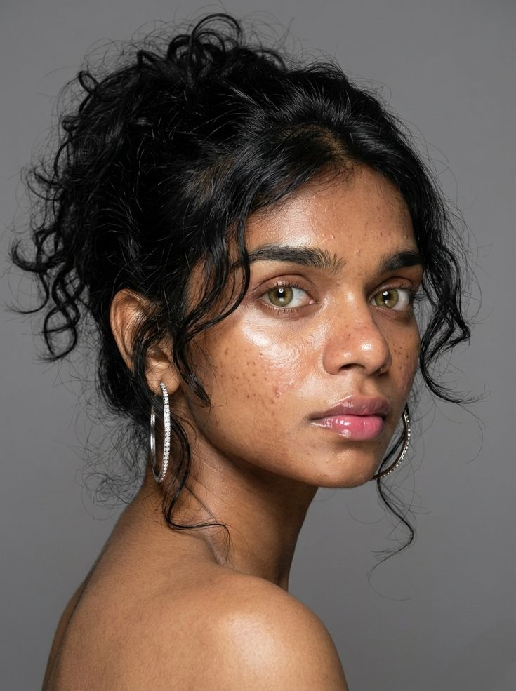

Hoje, Amanda é reconhecida como uma jovem artista em ascensão e proprietária de uma das maiores galerias de arte do estado da Bahia. Seu trabalho é marcado por cores vibrantes, traços expressivos e temas que refletem emoções, memórias e elementos da cultura brasileira.
"A arte sempre foi uma forma de expressão e conexão com o mundo. Meu trabalho mistura criatividade, técnica e sensibilidade para criar peças únicas que transmitam emoções e personalidade. Cada obra nasce de um processo de experimentação e inspiração", diz Amanda.
Atualmente, Amanda está cursando Artes Plásticas na Universidade de São Paulo (USP), onde continua desenvolvendo suas habilidades e explorando novas técnicas artísticas. Durante sua formação, ela tem experimentado diferentes estilos, como pintura, ilustração e arte digital.
Grande parte de suas inspirações vem da natureza, da cultura nordestina e das cores vibrantes presentes nas paisagens da Bahia. Suas obras buscam transmitir calor, energia e sensibilidade. O grande sonho de Amanda é levar um pouco da essência e da cultura da Bahia para o mundo através da arte, mostrando que cada obra pode contar uma história e despertar emoções em quem a observa.
.jpg)
.webp)
.webp)
.jpg)


.jpg)
.jpg)